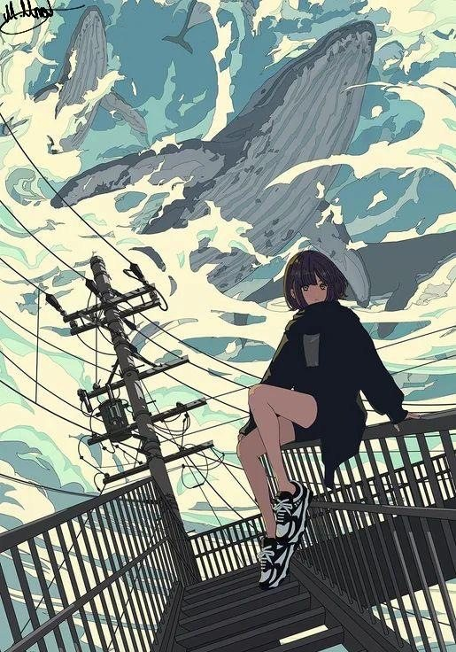
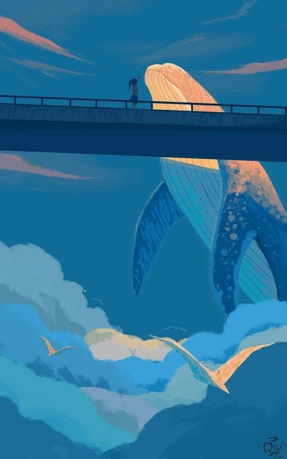
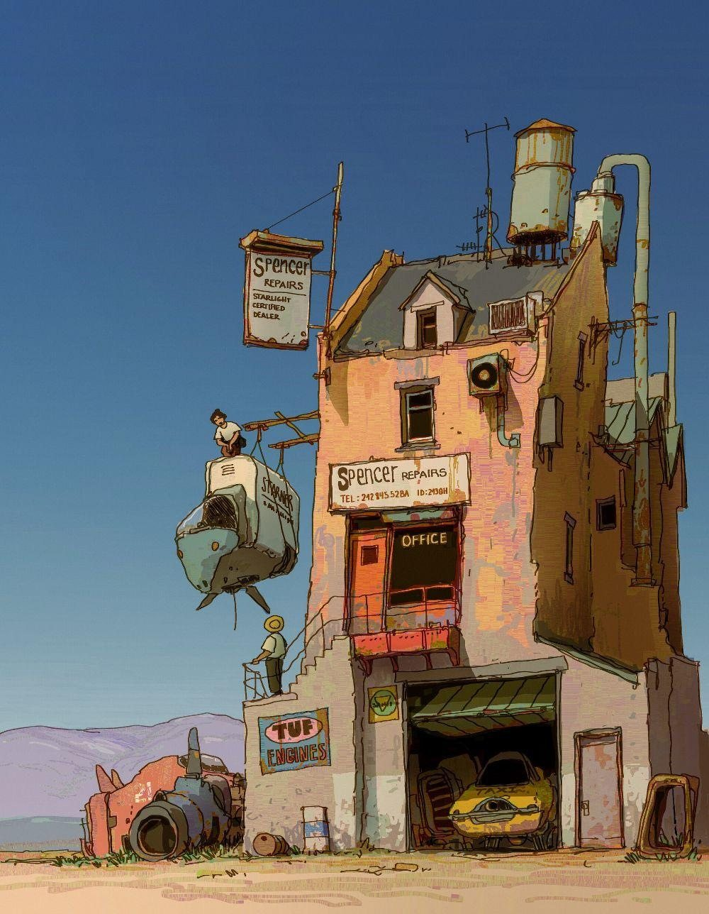
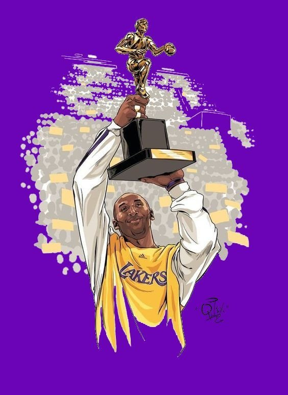
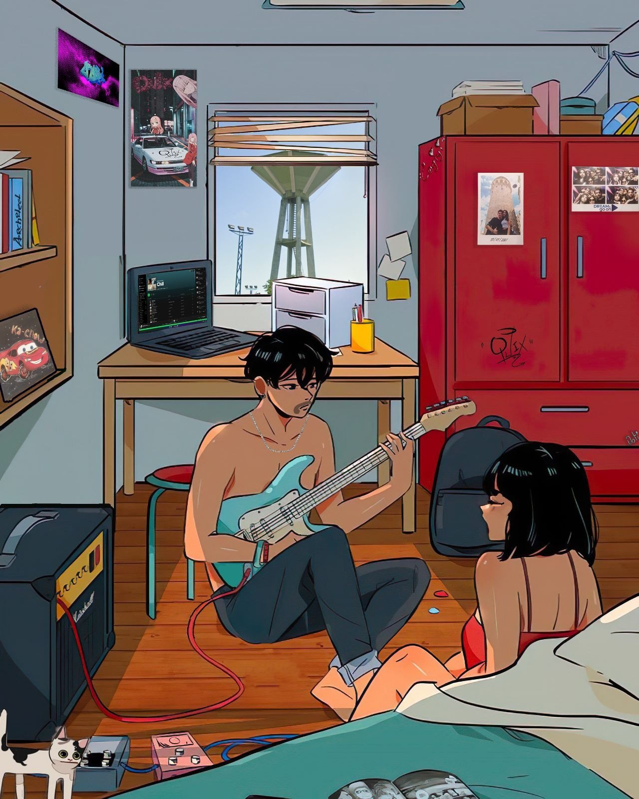

DIGITAL ARTWORKS / ILLUSTRATIONONGOING
DIGITAL
ARTWORKS.
ILLUSTRATION / DIGITAL PAINTING
Personal illustrations and digital paintings made alongside architecture — cities seen from below, skies full of whales, rooms and characters.

SKY WHALES01

THE BRIDGE02

LOOKING UP03

SPENCER REPAIRS04

TROPHY05

ROOM SESSION06